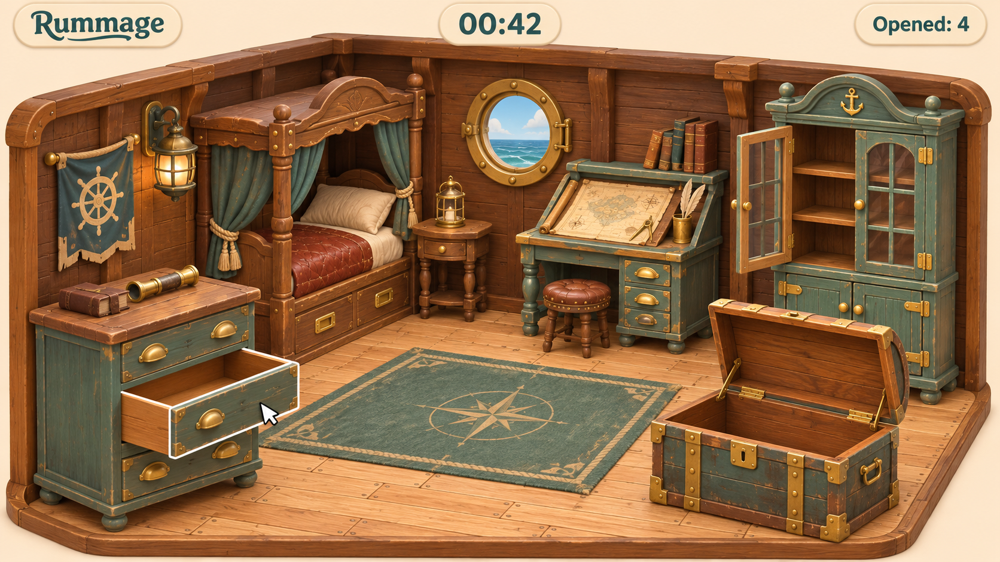
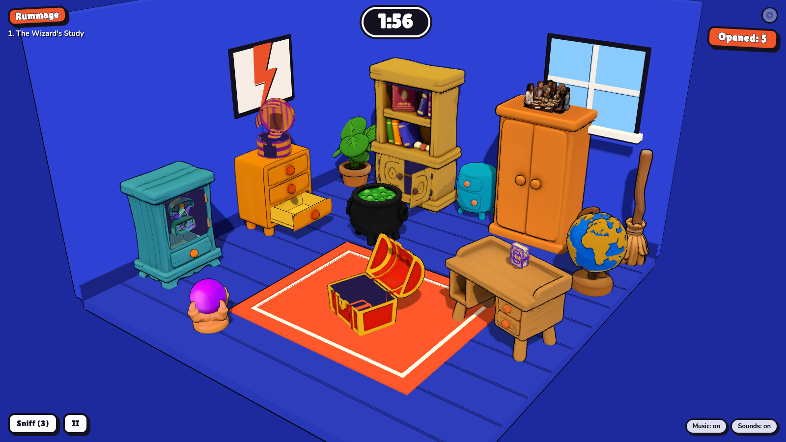
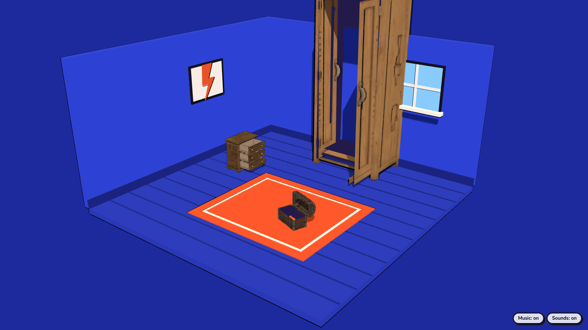
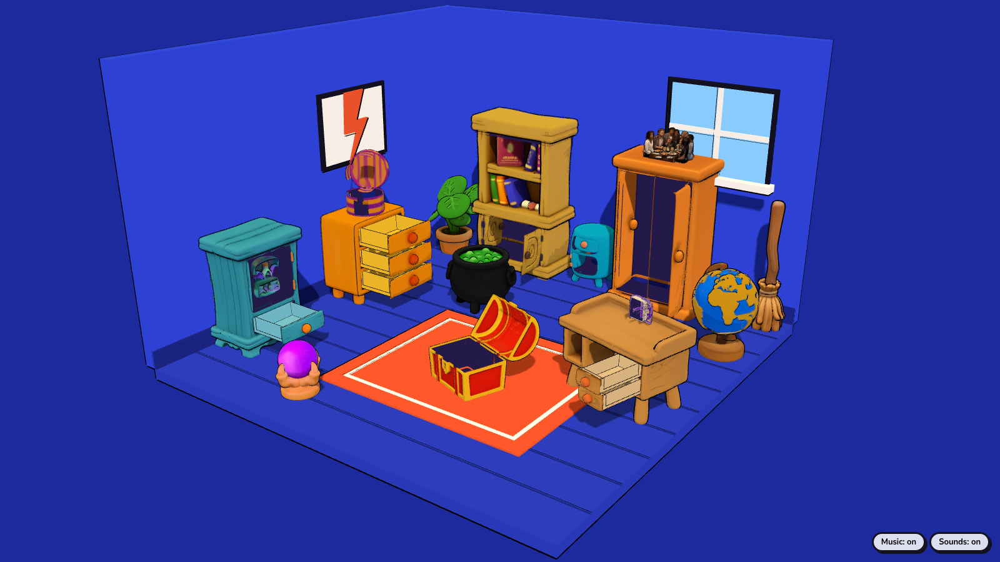
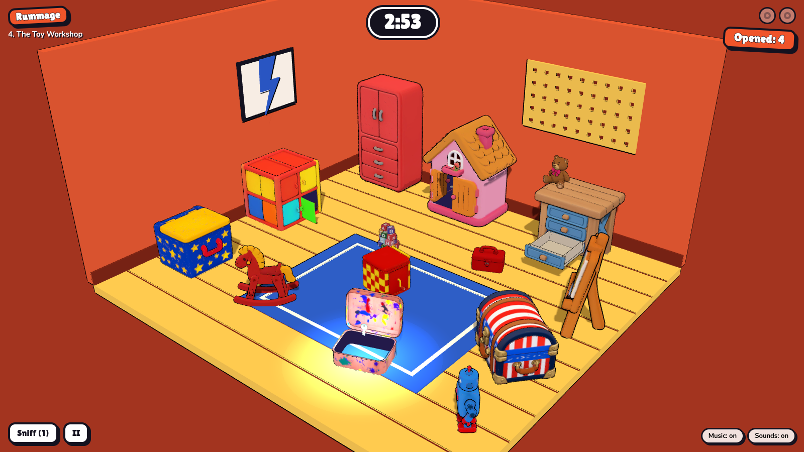
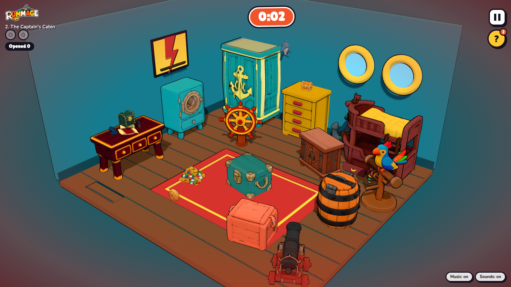
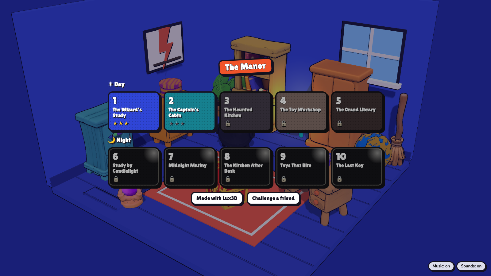

Manycore Aholo Global 3D AI Hackathon · November 2026 · built with Aholo Lux3D (text-to-3D + articulation)
1. Concept
Most AI 3D generators give you a statue: a nice shell you can look at but not use. Lux3D can also split a model into parts and give it working joints. Rummage is built on that one capability: if every generated drawer really slides and every door really swings, then a room full of generated furniture becomes a hide-and-seek board.
The wizard has lost the manor keys. Players rummage through five themed rooms: the Wizard's Study, the Captain's Cabin, the Haunted Kitchen, the Toy Workshop and the Grand Library. They open furniture to find keys before the clock runs out. Each room adds a mechanic: decoys (junk in some compartments), padlocks (find the little brass key first), mimics (lids that snap shut, +5 seconds) and riddles. A two-player Challenge mode lets one person hide a key anywhere, pick a time limit (30 s to unlimited) and send the link to a friend.
Why it needs Lux3D: the game rules are read straight from Lux3D's articulation output. Each moving part comes back as its own GLB with a URDF joint (type, axis, limits). There is no hand-rigging; the hiding spots are exactly the joints Lux3D produced.
2. How Lux3D builds a room
1 · Prompt“cartoon chest of drawers for a wizard's study, three stacked drawers…”, style cartoon
→
2 · Text-to-3DG1-Turbo PBR mesh with real-world size prediction, ~2 min
→
3 · Articulationmotion prompt: “each drawer slides out about 60 percent”. Returns URDF + one GLB per part, ~2.5 min
Every piece in the game went through this pipeline (script: tools/lux3d_probe.py). We logged each call with its prompt, task id and duration (docs/generation-log.md), and the in-game “Made with Lux3D” panel shows every piece's prompt, motion prompt, joints and timings. Tapping a card flies the camera to the piece and plays its joints.
In-game “Made with Lux3D” panel: prompt, motion prompt, joint types, generation and articulation time.Every joint in a room opened at once: drawers (prismatic) and doors and lids (revolute), all from Lux3D.
3. Development process
Sprint timeline (≈ 28 hours)
When (UTC)
What
{{TIMELINE}}
Problems we hit, and what we did
Problem
Fix (our code, disclosed)
Generated furniture bodies are hollow shells: open a door and you see through to the wall.
A slightly shrunken, back-face-only dark copy of each body becomes its interior, so it always matches the body's shape.
Generated models come back at inconsistent scales (a 15 cm wardrobe next to a 2 m one).
Each piece gets a target height in the room layout and is scaled to it.
For some double-door pieces both doors got the same swing sign, so one opened inward.
At load time we test-open each vertical-hinge door; if it moves backwards we flip its direction.
Download URLs expire after about 2 hours, and large downloads were sometimes cut off.
Downloads use resumable retries; failed articulation calls can be re-run from the saved task record (tools/retry_articulation.py).
Race: a piece was sometimes measured before its body mesh loaded and appeared 2–3× too big.
Wait until every link's own visual has loaded before measuring.
Raw articulation output is about 30 MB per piece.
Compressed to about 1.5 MB with gltf-transform (WebP textures + meshopt), so a full room loads in seconds.
4. Iterations of key assets
Art direction

Round 1 mockups (painterly). Rejected: they read as generic AI art.Round 2: six deliberate styles. The team picked Comic Ink.

Final: Comic Ink built from real Lux3D models, toon shading and ink outlines.
Furniture: photoreal test → cartoon set

Capability test: Lux3D photorealistic style. The articulation worked first time (3/3 pieces), but the look clashed with the art direction.

Same pipeline with Lux3D cartoon style and a palette in the prompt. Materials and shapes now match the comic look.
Items
Keys and decoys started as primitive shapes; the final game uses Lux3D-generated items (a golden skeleton key, a brass key, coins, a sock, a rubber duck…), with the primitives kept as a fallback.
5. Final result
Room 2: Captain's Cabin (decoys).Room 3: Haunted Kitchen (a padlocked piece needs the brass key).

Room 4: Toy Workshop (mimics snap shut, +5 s).

Deadline pressure: HURRY at 30 s, ticking clock, red pulse and faster music in the last 10 s.

Manor map with stars per room.Result: time, things opened, 1–3 stars against par.
Game design details
Strategic hiding: each spot is scored by size. Harder rooms favour small, sneaky spots for keys; decoys and mimics take the obvious big doors; keys never share a piece and vary across drawers, doors and lids.
Replayable: keys are re-hidden from a seeded random generator every run; stars reward speed and few opens.
Feel: springy joints with overshoot, squash on click, comic speech-bubble pop-ups, synthesized sound effects, and six synthesized songs (one per room) that speed up as the clock runs out. Music and sound effects have separate toggles.
Phones: touch-friendly (tapping a piece's body opens its nearest part) and compact layouts for portrait and landscape.
Quality: an automated playtest (tools/playtest.mjs) plays every room to a win in a headless browser and checks for errors.
The Lux3D content in numbers
Room
Articulated pieces
Hiding spots (joints)
Props
{{ROOMTABLE}}
6. Every Lux3D piece
Piece
Prompt (abridged)
Joints
Gen / Artic. (s)
{{PIECETABLE}}
7. Tools used (disclosure)
Tool
Used for
Aholo Lux3D (API, G1-Turbo)
All furniture, props and items: text-to-3D generation, plus articulation (part split + joints) for every interactive piece. Core of the game.
three.js, urdf-loader
Real-time rendering; loading Lux3D's URDF joints and per-part GLBs.
gltf-transform
Compressing Lux3D models for the web (WebP textures, meshopt geometry).
Vite
Build tooling. Hosted as a static Studio on ModelScope.
OpenAI image generation (via Codex)
2D concept mockups for choosing the art direction only. No mockup images appear in the game.
Claude (Anthropic) and Codex (OpenAI)
AI coding assistants used to write and debug the game code and asset scripts.
Web Audio API
All music and sound effects are synthesized in code (no audio files).
All code is original and lives in the repository above. Lux3D outputs are used under the Aholo product terms.